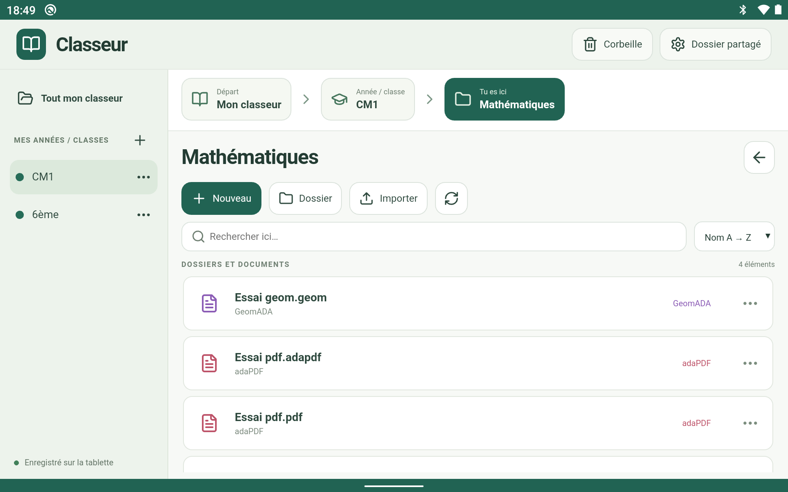

Les applications PAON
 Classeur
Classeur
Une application pour gérer les fichiers de travail des élèves sur une tablette ou un téléphone Android, avec intégration de TAda, adaPDF et GéomADA.
Aperçu de l’application


Téléchargements
Version 0.1.0 · Android · APK de test.
Les fichiers disponibles sont en cours de chargement.